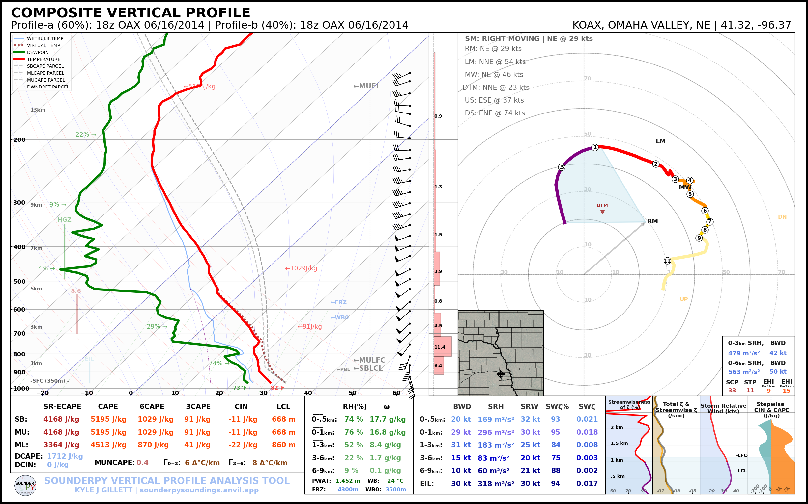
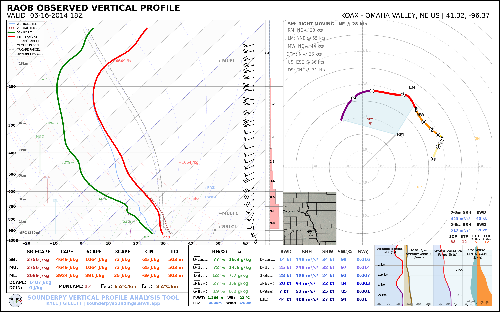

🛠️ Helper Tools
SounderPy includes several helper functions for profile calculations,
interpolation, file export, station lookup, and manipulation of clean_data
profiles.
See clean_data schema for the common profile structure used by these tools.
Returning a dictionary of profile parameters
Calculate SounderPy’s thermodynamic, kinematic, and interpolated profile parameters for a given clean_data profile.
The calculation returns four dictionaries containing:
general profile information and derived quantities;
thermodynamic parameters;
kinematic parameters; and
an interpolated version of the profile.
- class sounding_params(clean_data, storm_motion='right_moving', modify_sfc=None)
- Parameters:
clean_data (dict, required) – the dictionary of profile data to calculate profile parameters for (see 🌐 Tools for Getting Data)
storm_motion (str or list of floats, optional) – the storm motion used for calculations. Default is ‘right_moving’. Custom storm motions are accepted as a list of floats representing direction and speed. Ex:
[270.0, 25.0]where ‘270.0’ is the direction in degrees and ‘25.0’ is the speed in kts. See the Storm Motion Logic section for more details.modify_sfc (None or dict, optional, default is None) – a dict in the format
{'T': 25, 'Td': 21, 'ws': 20, 'wd': 270}to modify the surface values of theclean_datadict.
- .calc()
- Returns:
Four dictionaries containing general, thermodynamic, kinematic, and interpolated profile data.
- Return type:
tuple
Example:
general, thermo, kinem, intrp = spy.sounding_params(clean_data).calc()
Note
These calculated parameters are the same used on SounderPy plots. This function simply returns the master dictionary of all of these values.
Saving data to a file
- spy.to_file(file_type, clean_data, filename=None, convert_to_AGL=True)
Create a file of ‘cleaned’ SounderPy data
- Parameters:
file_type (str, required) – a str representing the file type you’d like to export data to.
clean_data (dict, required) – ‘cleaned’ SounderPy data dict
filename (str, optional, default is
None) – output filename. If omitted, SounderPy uses its defaultoutput filename.convert_to_AGL (bool, optional, default is True) – whether or not to convert height values to “above ground level” when saving to a file. Useful for CM1.
- Returns:
a file of SounderPy data.
Example:
Supported
file_typevalues are:"csv""sharppy""cm1"
spy.to_file("csv", clean_data, filename="sounding.csv")
spy.to_file("sharppy", clean_data, filename="sounding.snd")
spy.to_file("cm1", clean_data, filename="input_sounding")
See 💾 Exporting Data for complete export examples.
Merging two profiles via weighted averaging
Merge two profiles together using weighted averaging of values along a common height axis to return a single profile.
- spy.merge_profiles(profile_a, profile_b, weight_a)
- Parameters:
profile_a (dict, required) – a SounderPy `clean_data`dictionary containing variable arrays for profile_a.
profile_b (dict, required) – a SounderPy clean_data dictionary containing variable arrays for profile_b.
weight_a (float, optional) – the weight for profile_a in the averaging scheme, default is 0.5 (50%)
- Returns:
a clean_data dictionary with weighted-averaged values for z, T, Td, u, v, and p without metadata (see example below)
- Return type:
dict
Example:
# load in some sounding data
profile_a = spy.get_obs_data("OAX", "2014", "06", "16", "18")
profile_b = spy.get_obs_data("OAX", "2014", "06", "17", "00")
# apply `merge_profiles()` function
merged_profile = spy.merge_profiles(profile_a, profile_b, weight_a=0.6)
# reapply profile metadata and plot titles
merged_profile['site_info'] = {'site-id': 'KOAX',
'site-name': 'OMAHA VALLEY',
'site-lctn': 'NE US',
'site-latlon': [41.32, -96.37],
'site-elv': 350,
'source': 'RAOB OBSERVED PROFILE',
'model': 'none',
'fcst-hour': 'none',
'run-time': 'none',
'valid-time': 'none',
'box_area': 'none'}
merged_profile['titles'] = {'top_title': 'COMPOSITE VERTICAL PROFILE',
'left_title': 'Profile-a (60%): 18z OAX 06/16/2014 | Profile-b (40%): 00z OAX 06/16/2014',
'right_title': 'KOAX, OMAHA VALLEY, NE | 41.32, -96.37 '}
# build a sounding
spy.build_sounding(merged_profile, radar=None, special_parcels='simple')
{kind=link}

Important
merge_profiles() returns the merged profile variables but does not
automatically create new site_info or titles metadata. These should
be supplied before producing a fully annotated SounderPy plot.
Smooth a profile
Apply a simple SciPy gaussian smoother to a SounderPy clean_data profile
- spy.smooth_profile(clean_data, sigma)
- Parameters:
clean_data (dict, required) – a SounderPy `clean_data`dictionary.
sigma (float, optional, default is
0.5) – standard deviation of the Gaussian kernel. Larger values produce stronger smoothing.
- Returns:
a clean_data dictionary with smoothed values for z, T, Td, u, v, and p. Metadata remains unchanged.
- Return type:
dict
Here is an (extreme) example:
# load in some sounding data
clean_data = spy.get_obs_data("OAX", "2014", "06", "16", "18")
smoothed_profile = spy.smooth_profile(clean_data, 3)
spy.build_sounding(smoothed_profile, radar=None, special_parcels='simple')
{kind=link}

Note
Smoothing alters the original observed or modeled profile. Use this tool carefully when calculating quantities that depend on sharp vertical gradients, such as lapse rates, inversions, shear, or parcel properties.
Finding a station latitude/longitude
- spy.get_latlon(station_type, station_id)
Return the latitude and longitude associated with a supported station identifier.
- Parameters:
station_type (str, required) – the station ‘type’ that corresponds with the given station ID
station_id (str, required) – the station ID for the given station type
- Returns:
lat/lon float pair
- Return type:
list
Example:
spy.get_latlon("metar", "KMOP")
spy.get_latlon("bufkit", "APX")
spy.get_latlon("raob", "OUN")
spy.get_latlon("buoy", "45210")
Tip
The returned [latitude, longitude] list can be passed directly to
get_model_data.
Interpolating a vertical profile
- spy.interp_data(variable, heights, step=100)
Interpolate a 1D array of data (such as a temperature profile) over a given interval (step) based on a corresponding array of height values.
- Parameters:
variable (array-like, required) – an array of data to be interpolated. Must be same length as height array.
heights (array-like, required) – heights corresponding to the vertical profile used to interpolate. Must be same length as variable array.
step (int, optional) – the resolution of interpolation. Default is 100 (recommended value is 100)
- Returns:
interp_var, an array of interpolated data.
- Return type:
numpy.ndarray
Example:
spy.interp_data(temperature_array, height_array, step=100)
Finding a ‘nearest’ value
- spy.find_nearest(array, value)
Return the index of the array element closest to a requested value.
- Parameters:
array (arr, required) – an array of data to be searched through
value (int or float, required) – Target value to locate within the array.
- Returns:
nearest_idx, index of the data array that corresponds with the nearest value to the given value
- Return type:
int
Example:
idx_500m = spy.find_nearest(z, 500)
print(z[idx_500m])
Printing data to the console
Print a compact summary of commonly used thermodynamic and kinematic parameters to the console.
- spy.print_variables(clean_data, storm_motion='right_moving', modify_sfc=None)
- Parameters:
clean_data (dict, required) – the dictionary of profile data to calculate profile parameters for (see 🌐 Tools for Getting Data)
storm_motion (str or list of floats, optional) – the storm motion used for calculations. Default is ‘right_moving’. Custom storm motions are accepted as a list of floats representing direction and speed. Ex:
[270.0, 25.0]where ‘270.0’ is the direction in degrees and ‘25.0’ is the speed in kts. See the Storm Motion Logic section for more details.modify_sfc (None or dict, optional, default is None) – a dict in the format
{'T': 25, 'Td': 21, 'ws': 20, 'wd': 270}to modify the surface values of theclean_datadict.
- Returns:
None. Calculated parameters are written to standard output.- Return type:
None
spy.print_variables(clean_data, storm_motion="right_moving")
> THERMODYNAMICS ---------------------------------------------
--- SBCAPE: 2090.8 | MUCAPE: 2090.8 | MLCAPE: 1878.3 | MUECAPE: 1651.9
--- MU 0-3: 71.1 | MU 0-6: 533.0 | SB 0-3: 71.1 | SB 0-6: 533.0
> KINEMATICS -------------------------------------------------
--- 0-500 SRW: 35.0 knot | 0-500 SWV: 0.019 | 0-500 SHEAR: 21.8 | 0-500 SRH: 186.2
--- 1-3km SRW: 20.9 knot | 1-3km SWV: 0.005 | 1-3km SHEAR: 14.1 | | 1-3km SRH: 54.0